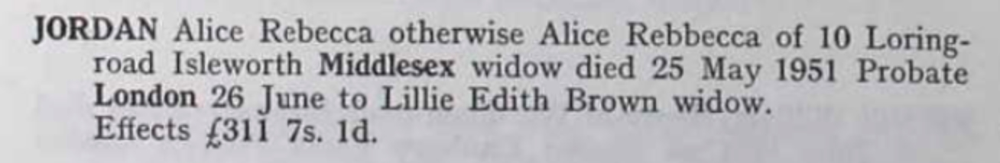

Alice Rebecca Jordan (née Deal) 1880 - 1951
[ Home ] | [ Calendar ] | [ Surnames Index ] | [ Family History ]Alice Deal, the wife of Frederick John Thomas Jordan (the second cousin twice-removed on the mother's side of Nigel Horne), was born in Chatham, Kent, England on Nov 7, 1880<span class="citation">1,2,3</span>, was baptized in Elham, Kent, England on Dec 12, 1880 and married Frederick (a grocer's carman with whom she had 1 child, Albert Frederick) at St Luke's Church, Hammersmith, London, England on Apr 13, 1907<span class="citation">4</span>.</p><p>Throughout her life, she lived on 10 Loring Road, Isleworth, London on Jun 19, 1921<span class="citation">7</span>, on Sep 29, 1939<span class="citation">1</span>, in 1944<span class="citation">6</span> and in 1951<span class="citation">5</span>. <p>She died on May 25, 1951 in Ealing, London<span class="citation">3</span>.
Children
- Albert Frederick was born on May 17, 1914
Citations
- 1939 Register - Findmypast (was the wife of the head of the household)
- England & Wales births 1837-2006 - Findmypast
- England & Wales deaths 1837-2007 - Findmypast
- England & Wales Marriages 1837-2005 - Findmypast
- England & Wales, National Probate Calendar (Index of Wills and Administrations),1861-1941 Online publication - Provo, UT, USA: Ancestry.com Operations Inc, 2010.Original data - Principal Probate Registry. Calendar of the Grants of Probate and Letters of Administration made in the Probate Registries of the High Court of Justice in England. Londo
- From her husband's probate record.
- 1921 Census Of England & Wales - Findmypast (was age 40 and the wife of the head of the household)
Media
Alice Tayler - Probate

England & Wales marriages 1837-2005 - BMD/M/1904/1/AZ/000251/111
England & Wales Deaths 1837-2007 - BMD-D-1951-2-AZ-000521-080
England & Wales marriages 1837-2005 - BMD/M/1907/2/AZ/000097/188
England & Wales births 1837-2006 - BMD/B/1880/4/AZ/000140/331
Family Tree

Generated by Ged2Site. Last updated on Jul 20, 2025